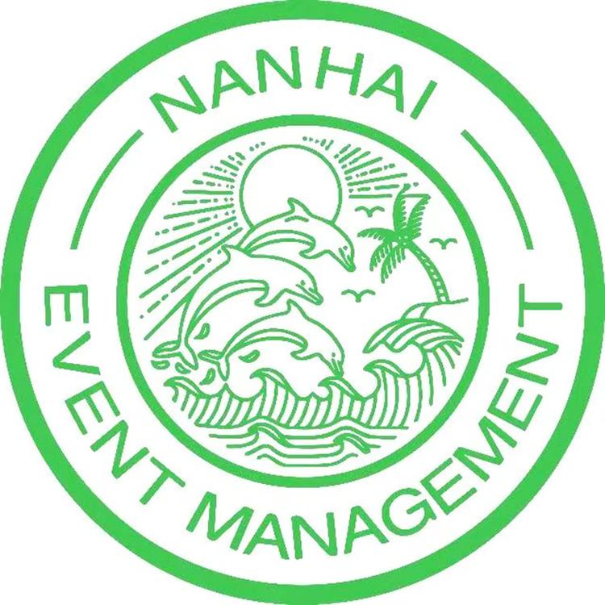

01 / Launch
真实新品项目
参与 X Fold6 新品上市与发布会内容表达，在功能卖点、用户场景、KOL 视角和 Keynote 之间做信息取舍。
这个网站不是把简历搬上来，而是把真实项目、形成的方法和正在搭建的工具放在一起，让招聘方更快判断我适合什么。
参与 X Fold6 新品上市与发布会内容表达，在功能卖点、用户场景、KOL 视角和 Keynote 之间做信息取舍。
用 GPT、Claude、Codex、Streamlit 搭建产品情报和内容生产工具，把个人效率沉淀成可复用流程。
从酒店、会展、策展到消费科技，持续训练对真实用户、现场执行和表达落地的敏感度。
相比只做执行，我更关心一个问题：一个产品真正值得被用户记住的价值是什么，以及这些价值如何被组织成清晰、可信、可传播的表达。
理解卖点、权益、场景、讲稿和 Keynote 之间的关系，把技术语言转成用户语言。
关注社媒话语、竞品发布、用户反馈和产品评价，把碎片信息整理成可用于判断的结构化材料。
使用 GPT、Claude、Codex 与 Streamlit 搭建工具原型，让内容生产、舆情分析和竞品研究更高效。
经历部分保留必要信息，但不堆简历术语。重点是说明：我如何从服务体验、会展执行，逐步走到消费电子产品营销和 AI 化工作流。
参与 X Fold6 发布会内容表达与新品上市传播，围绕价格权益、小 V Claw、折叠屏生产力场景和 AI 工作流进行信息组织与表达优化。
参与澳门大学摄影比赛暨展览策划，协助策展方案、空间布展、物料落地与宣传推广，训练现场执行和多方协同能力。

在南海会务、JW 万豪、猎聘 RPO 等场景中参与会展执行、宾客关系和信息整理，形成对真实用户和现场体验的敏感度。
这几个项目对应三件事：发现问题、组织信息、把 AI 工具接进真实工作流。它们不完美，但都来自真实场景。

围绕新品反馈、竞品口碑与传播复盘，借助 GPT / Claude 与 Streamlit 搭建研判工具，支持关键词检索、跨平台搜索入口生成与简报输出。

面向实习生与职场新人的 AI 工作流小程序，覆盖周报润色、Excel 助手、会议纪要、Deck 生成等高频任务场景。
围绕折叠屏生产力、AI Agent、价格权益和 KOL 使用场景，思考如何把复杂功能转成用户能快速理解的价值感。
将主投简历同步为网页版本，方便招聘方快速查看，也作为长期作品集的一部分持续迭代。
真正有意思的是：技术如何被讲清楚，用户如何形成判断，AI 如何进入日常工作流。
关注手机、折叠屏、AI 终端的卖点表达、发布会叙事、媒体评测和用户社媒反馈。
探索 GPT、Claude、Codex 等工具如何帮助信息整理、内容生产、竞品研判和个人效率提升。
从旅游、酒店和服务场景出发，继续关注体验设计、社会可持续性与包容性数字体验。